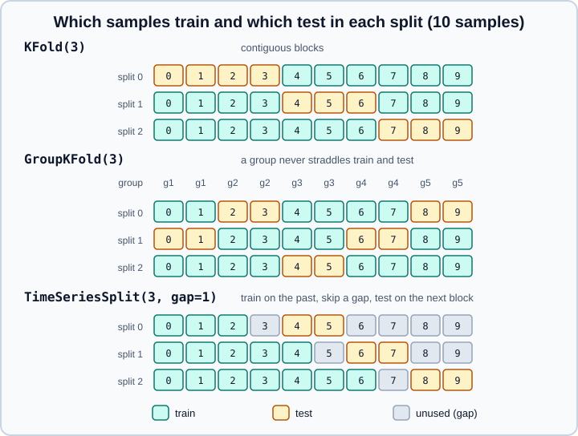
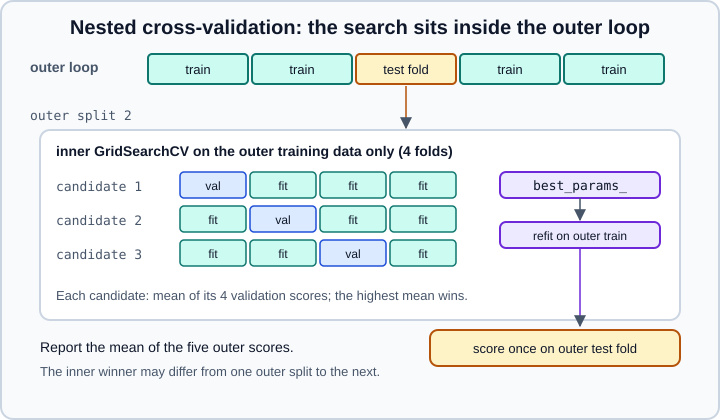

Cross-Validation & Splitters in scikit-learn
|
This content was generated with the assistance of AI and should be verified against the official documentation before being relied on in production. |
Cross-validation estimates how well a model will behave on data it has not seen, without giving up a large share of the
data to a fixed validation set. The training data is cut into folds, the model is fitted on all folds but one and scored
on the fold that was left out, and the procedure is repeated until every fold has been the held-out one. This page covers
the three evaluation functions (cross_val_score, cross_validate, cross_val_predict), every splitter in
sklearn.model_selection, the choices that make a cross-validated score honest (shuffling, stratification, groups, time
order, preprocessing inside the folds, nested validation) and the errors people meet when they follow older tutorials.
It targets scikit-learn 1.9 (1.9.1 at the time of writing) with NumPy 2.5 and pandas 3.1, and was checked in October 2026. Examples target Python 3.13 or 3.14 and were run on Python 3.13. Every example was run with Python 3.13, scikit-learn 1.9.1 and NumPy 2.5.4, and the printed output is the real output; timings and random draws will differ on another machine. The concept of a train, validation and test split is introduced in Model Evaluation & Validation, the first split is covered in Train/Test Split, and the choice of the score in Metrics & Scoring.
The idea in one paragraph
Fitting a model and scoring it on the same data rewards memorisation: a model that repeats the training labels scores
perfectly and predicts nothing useful. The usual protection is a held-out test set. Tuning settings against that test set
slowly leaks knowledge of it into the model, so the practice is to keep a final test set untouched and to use
cross-validation on the remaining data for every decision (which model, which hyper-parameters, which features). In
k-fold cross-validation each of the k folds is the validation fold once, the model is trained on the other k - 1
folds, and the reported performance is the average of the k scores. Cross-validation is computationally expensive, since
it fits the model k times, but it wastes little data, which matters when the dataset is small.
All the examples below use scikit-learn’s built-in datasets or synthetic data, so they run without downloads.
cross_val_score: one number per fold
cross_val_score fits a clone of the estimator on every training part, scores it on every validation part and returns an
array with one score per fold. Its signature in 1.9 is:
cross_val_score(estimator, X, y=None, *, groups=None, scoring=None, cv=None, n_jobs=None,
verbose=0, params=None, pre_dispatch="2*n_jobs", error_score=nan)Source: API reference, cross_val_score
An example on the breast cancer dataset, with preprocessing inside a pipeline:
from sklearn.datasets import load_breast_cancer
from sklearn.linear_model import LogisticRegression
from sklearn.model_selection import cross_val_score
from sklearn.pipeline import make_pipeline
from sklearn.preprocessing import StandardScaler
X, y = load_breast_cancer(return_X_y=True)
model = make_pipeline(StandardScaler(), LogisticRegression(max_iter=1000))
scores = cross_val_score(model, X, y) # cv=5 by default, scoring=model.score
print(scores.round(3))
print(f"accuracy {scores.mean():.3f} +/- {scores.std():.3f}")
f1 = cross_val_score(model, X, y, cv=10, scoring="f1")
print(f1.round(3), round(f1.mean(), 3))[0.982 0.982 0.974 0.974 0.991]
accuracy 0.981 +/- 0.007
[0.986 0.986 0.986 0.973 0.986 0.986 0.959 1. 1. 0.986] 0.985The arguments that matter:
-
cvdecides how the data is split.Nonemeans 5-fold. An integer means that many folds: stratified k-fold when the estimator is a classifier and the target is binary or multiclass, plainKFoldotherwise. A splitter object, or an iterable that yields(train_indices, test_indices)pairs, gives full control. Neither integer form shuffles the rows. -
scoringis a scorer name ("accuracy","f1","roc_auc","neg_root_mean_squared_error"), a callable made withmake_scorer, orNonefor the estimator’s ownscoremethod (accuracy for classifiers, R² for regressors). Scorers follow the convention that greater is better, so error metrics carry aneg_prefix and the returned values are negative; flip the sign before reporting. -
groupscarries the group label of every row for the group-aware splitters (see below). -
paramsforwards extra data such assample_weight(see the metadata section). -
n_jobsruns folds in parallel with joblib;-1uses every core. -
error_scoreis the value recorded when a fit fails:nanby default (the fold is reported as missing and a warning is raised) or"raise"to stop at the first failure, which is what you want while developing.
The mean and the standard deviation of the fold scores are a rough guide, not a confidence interval: the folds share training rows, so the scores are not independent. Use the spread to notice instability rather than to run a significance test.
cross_validate: several metrics, timings and the fitted models
cross_validate differs from cross_val_score in two ways: it accepts several metrics at once, and it returns a
dictionary with fit times, score times and, on request, training scores, the fitted estimators and the train/test indices.
from sklearn.datasets import load_breast_cancer
from sklearn.linear_model import LogisticRegression
from sklearn.model_selection import cross_validate
from sklearn.pipeline import make_pipeline
from sklearn.preprocessing import StandardScaler
import pandas as pd
X, y = load_breast_cancer(return_X_y=True)
model = make_pipeline(StandardScaler(), LogisticRegression(max_iter=1000))
res = cross_validate(
model, X, y, cv=5,
scoring={"acc": "accuracy", "auc": "roc_auc", "f1": "f1"},
return_train_score=True, return_estimator=True, return_indices=True,
)
print(sorted(res))
df = pd.DataFrame({k: v for k, v in res.items()
if k not in ("estimator", "indices", "fit_time", "score_time")})
print(df.round(4).to_string())
print(df.mean().round(4).to_string())
print(len(res["estimator"]), res["indices"]["test"][0][:5])['estimator', 'fit_time', 'indices', 'score_time', 'test_acc', 'test_auc', 'test_f1', 'train_acc', 'train_auc', 'train_f1']
test_acc train_acc test_auc train_auc test_f1 train_f1
0 0.9825 0.9912 0.9948 0.9971 0.9859 0.9931
1 0.9825 0.9890 0.9967 0.9977 0.9861 0.9913
2 0.9737 0.9890 0.9970 0.9975 0.9796 0.9913
3 0.9737 0.9912 0.9878 0.9990 0.9793 0.9930
4 0.9912 0.9868 0.9997 0.9971 0.9929 0.9896
test_acc 0.9807
train_acc 0.9895
test_auc 0.9952
train_auc 0.9977
test_f1 0.9848
train_f1 0.9916
5 [0 1 2 3 4]The keys of the result are fit_time, score_time and one test_<name> entry per metric. return_train_score=True adds
train_<name> entries and costs extra scoring time, so it is off by default; it is the quickest way to see the gap
between training and validation performance that signals overfitting (Validation & Learning Curves
plots that gap).
return_estimator=True keeps the fitted clone of every fold, which is how you inspect how much the coefficients or the
selected features change from fold to fold, and return_indices=True records which rows were in every test fold. Passing
scoring as a list, tuple or set of scorer names gives the keys test_<scorer name>; passing a dictionary lets you pick
the names and mix scorer names with make_scorer objects.
cross_val_predict: out-of-fold predictions
cross_val_predict returns, for every row, the prediction made by the model that did not see that row. The method
argument selects predict (default), predict_proba, predict_log_proba or decision_function.
from sklearn.datasets import load_breast_cancer
from sklearn.linear_model import LogisticRegression
from sklearn.metrics import accuracy_score
from sklearn.model_selection import cross_val_predict, cross_val_score, ShuffleSplit
from sklearn.pipeline import make_pipeline
from sklearn.preprocessing import StandardScaler
X, y = load_breast_cancer(return_X_y=True)
model = make_pipeline(StandardScaler(), LogisticRegression(max_iter=1000))
pred = cross_val_predict(model, X, y, cv=5)
proba = cross_val_predict(model, X, y, cv=5, method="predict_proba")
print(pred.shape, proba.shape, round(accuracy_score(y, pred), 4))
print("mean of fold scores:", cross_val_score(model, X, y, cv=5).mean().round(4))
try:
cross_val_predict(model, X, y, cv=ShuffleSplit(n_splits=3, test_size=0.2, random_state=0))
except ValueError as exc:
print("ValueError:", exc)(569,) (569, 2) 0.9807
mean of fold scores: 0.9807
ValueError: cross_val_predict only works for partitionsOnly splitters whose test folds partition the data (every row in exactly one test fold) are accepted, which is why
ShuffleSplit raises. The official guide warns that cross_val_predict is not an appropriate measure of generalisation
error: it pools predictions from several different models, and a metric computed on the pooled vector is not the average
of the per-fold metrics (the two agree above only because accuracy is a plain average on equal-sized folds). Use it to
visualise errors, to plot a confusion matrix of out-of-fold predictions, or to build the inputs of a second-level model
(stacking); use cross_val_score or cross_validate to report performance.
The splitters
A splitter is an object with a split(X, y=None, groups=None) method that yields (train_indices, test_indices) pairs
and a get_n_splits() method. Pass it as cv=. The table summarises the ones in sklearn.model_selection; the numbers of
splits are the real values for 100 rows, 10 groups and the default arguments.
| Splitter | Splits | Use it when |
|---|---|---|
|
5 |
Rows are independent and the target is numeric, or classes are balanced. |
|
5 |
Classification, especially with rare classes: every fold keeps roughly the class proportions. |
|
15 for 5 x 3 |
A steadier estimate on small datasets, at |
|
10 |
You want to choose the number of repetitions and the test fraction independently of each other. Test sets overlap. |
|
10 |
Same, with class proportions preserved. |
|
100 |
Tiny datasets only: |
|
4950 for p=2 |
Almost never: |
|
5 |
Several rows per subject, device, patient or experiment; whole groups go to one fold. |
|
5 |
Groups and imbalanced classes together. |
|
10 |
One fold per group, for example one fold per subject or per year. |
|
varies |
Hold out several groups at a time; the shuffle variant samples the combinations. |
|
5 |
Ordered observations: always train on the past and test on the future. |
|
one per distinct non-negative value |
A validation split that already exists; |

KFold, shuffling and random_state
KFold cuts the rows, in their current order, into k contiguous blocks.
import numpy as np
from sklearn.model_selection import KFold
X = np.arange(20).reshape(10, 2)
for train, test in KFold(3).split(X):
print("train", train, "test", test)
print()
for train, test in KFold(3, shuffle=True, random_state=0).split(X):
print("train", train, "test", test)train [4 5 6 7 8 9] test [0 1 2 3]
train [0 1 2 3 7 8 9] test [4 5 6]
train [0 1 2 3 4 5 6] test [7 8 9]
train [0 1 3 5 6 7] test [2 4 8 9]
train [0 2 3 4 5 8 9] test [1 6 7]
train [1 2 4 6 7 8 9] test [0 3 5]Source: scikit-learn user guide, K-fold
Whether to shuffle depends on how the rows are ordered. If rows are sorted (all samples of one class first, or by subject), contiguous folds can be badly unrepresentative. The iris dataset is stored sorted by class, which makes the point sharply:
from sklearn.datasets import load_iris
from sklearn.model_selection import KFold, StratifiedKFold, check_cv, cross_val_score
from sklearn.svm import SVC
X, y = load_iris(return_X_y=True) # iris is sorted by class
print(type(check_cv(5, y, classifier=True)).__name__, type(check_cv(5, y, classifier=False)).__name__)
print("KFold(3) :", cross_val_score(SVC(), X, y, cv=KFold(3)).round(2))
print("KFold(3, shuffle=True) :", cross_val_score(SVC(), X, y, cv=KFold(3, shuffle=True, random_state=0)).round(2))
print("cv=3 (StratifiedKFold) :", cross_val_score(SVC(), X, y, cv=3).round(2))StratifiedKFold KFold
KFold(3) : [0. 0. 0.]
KFold(3, shuffle=True) : [0.98 0.94 0.96]
cv=3 (StratifiedKFold) : [0.96 0.98 0.94]With three contiguous folds each validation fold contains a class the model never saw in training, so every score is 0.
check_cv is the function that cross_val_score uses to turn cv=5 into a splitter object; it shows that an integer
means StratifiedKFold for a classifier and KFold otherwise. Passing an integer therefore never shuffles, but
stratification already protects sorted classification targets.
Shuffling is not always right. For observations ordered in time, shuffling puts the future into the training set and inflates the score (see the time series section). A shuffle also needs a seed to be reproducible, and scikit-learn rejects a seed when it would have no effect:
from sklearn.dummy import DummyClassifier
from sklearn.model_selection import KFold, StratifiedKFold, cross_val_score
import numpy as np
X = np.zeros((20, 1)); y = np.array([0, 1] * 10)
try:
StratifiedKFold(5, random_state=0)
except ValueError as exc:
print("ValueError:", exc)
cv = StratifiedKFold(5, shuffle=True, random_state=0)
a = [te.tolist() for _, te in cv.split(X, y)]
b = [te.tolist() for _, te in cv.split(X, y)]
print("integer seed, repeatable:", a == b)
cv = StratifiedKFold(5, shuffle=True) # random_state=None
a = [te.tolist() for _, te in cv.split(X, y)]
b = [te.tolist() for _, te in cv.split(X, y)]
print("no seed, repeatable :", a == b)ValueError: Setting a random_state has no effect since shuffle is False. You should leave random_state to its default (None), or set shuffle=True.
integer seed, repeatable: True
no seed, repeatable : FalseWith an integer random_state every call to split gives the same folds, so the same splitter object can be reused to
compare several models on identical folds. With None the folds change at every call. Pass a splitter object, not just a
number, whenever two models must be compared fairly. The user guide adds that GridSearchCV reuses the same shuffling for
all parameter sets within a single fit call even when random_state is None.
StratifiedKFold: keeping rare classes in every fold
With 45 negatives and 5 positives, plain k-fold can give a fold with no positives, which makes recall, ROC AUC and average precision undefined or misleading:
import numpy as np
from sklearn.model_selection import KFold, StratifiedKFold
X = np.ones((50, 1))
y = np.array([0] * 45 + [1] * 5) # 10 % positives
for name, cv in [("KFold(3)", KFold(3)), ("StratifiedKFold(3)", StratifiedKFold(3))]:
print(name)
for train, test in cv.split(X, y):
print(" train", np.bincount(y[train]), " test", np.bincount(y[test], minlength=2))KFold(3)
train [28 5] test [17 0]
train [28 5] test [17 0]
train [34] test [11 5]
StratifiedKFold(3)
train [30 3] test [15 2]
train [30 3] test [15 2]
train [30 4] test [15 1]Two cautions from the official guide. Stratification was introduced to work around engineering problems (undefined metrics, folds with a missing class) and not to solve a statistical one; by making folds more homogeneous it can shrink the spread of the scores, so the fold-to-fold variability under-states the real uncertainty when classes are rare. And stratification balances the target only: it does not respect groups or time order.
Group-aware splitters
When several rows come from the same subject, patient, device, document or experiment, rows of one group resemble each other far more than rows of different groups. A random split puts siblings in both training and validation sets, and a flexible model scores well by recognising the subject. The next example builds a dataset in which the label is a property of the subject only, with no signal that transfers to new subjects:
import numpy as np
from sklearn.ensemble import RandomForestClassifier
from sklearn.model_selection import GroupKFold, KFold, cross_val_score
# 40 subjects x 10 samples. A subject-specific offset lets a flexible model "recognise" the subject.
rng = np.random.default_rng(0)
n_subjects, per = 40, 10
subject = np.repeat(np.arange(n_subjects), per)
offset = rng.normal(scale=3, size=(n_subjects, 5))
X = offset[subject] + rng.normal(size=(n_subjects * per, 5))
y = np.repeat(rng.integers(0, 2, size=n_subjects), per) # label is a property of the subject only (no real signal)
model = RandomForestClassifier(n_estimators=100, random_state=0)
plain = cross_val_score(model, X, y, cv=KFold(5, shuffle=True, random_state=0))
grouped = cross_val_score(model, X, y, cv=GroupKFold(5), groups=subject)
print("shuffled KFold :", plain.mean().round(2))
print("GroupKFold :", grouped.mean().round(2))shuffled KFold : 0.88
GroupKFold : 0.51The shuffled k-fold reports 0.88 for a task that is impossible by construction; GroupKFold reports chance level (0.51),
the honest answer. The group-aware splitters take the labels through the groups argument of split (or of
cross_val_score and friends):
import numpy as np
from sklearn.model_selection import GroupKFold, LeaveOneGroupOut, StratifiedGroupKFold
X = np.arange(20).reshape(10, 2)
y = np.array([0, 0, 0, 0, 0, 0, 0, 1, 1, 1])
groups = np.array([1, 1, 2, 2, 3, 3, 4, 4, 5, 5])
def show(name, cv):
print(name)
for train, test in cv.split(X, y, groups=groups):
print(" train", train, "test", test)
show("GroupKFold(3)", GroupKFold(3))
show("StratifiedGroupKFold(3)", StratifiedGroupKFold(3))
show("LeaveOneGroupOut()", LeaveOneGroupOut())GroupKFold(3)
train [0 1 4 5 6 7] test [2 3 8 9]
train [2 3 4 5 8 9] test [0 1 6 7]
train [0 1 2 3 6 7 8 9] test [4 5]
StratifiedGroupKFold(3)
train [2 3 4 5 6 7] test [0 1 8 9]
train [0 1 4 5 8 9] test [2 3 6 7]
train [0 1 2 3 6 7 8 9] test [4 5]
LeaveOneGroupOut()
train [2 3 4 5 6 7 8 9] test [0 1]
train [0 1 4 5 6 7 8 9] test [2 3]
train [0 1 2 3 6 7 8 9] test [4 5]
train [0 1 2 3 4 5 8 9] test [6 7]
train [0 1 2 3 4 5 6 7] test [8 9]The group-aware splitters differ in what they balance:
-
GroupKFoldkeeps a group in a single fold and tries to give every fold the same number of samples whenshuffle=False. Since scikit-learn 1.6 it also acceptsshuffle=True(withrandom_state), in which case it tries to place an equal number of distinct groups in each fold and does not account for group sizes. Release 1.9 made its group distribution use a stable sort so that the splits are consistent across runs. -
StratifiedGroupKFoldadditionally tries to preserve the class distribution. It assigns groups greedily, highest class-variance groups first, so the result can be imbalanced even when a perfect stratification exists; if the groups have similar class mixes,GroupKFoldis better. Withshuffle=Trueonly groups with the same class-distribution standard deviation are really shuffled. Since 1.9 it raisesValueErrorwhenn_splitsexceeds the number of distinct groups. -
LeaveOneGroupOutgives one fold per group (here five), the right choice when the groups are experiments or years and you want to know how a model trained on all the others transfers to the held-out one.LeavePGroupsOutholds outPgroups per split and its test sets overlap forP > 1;GroupShuffleSplitsamples such partitions at random when all combinations would be too many.
A group-aware splitter ignores nothing silently: since scikit-learn 1.5, a splitter that does not use groups (for
example KFold) emits a warning when you pass groups to its split, which catches the common mistake of forgetting to
switch the splitter. Do not use train_test_split for grouped data; it cannot account for groups (see
Train/Test Split). To make a single grouped hold-out split, take the
first split of GroupShuffleSplit(n_splits=1, test_size=0.2).
TimeSeriesSplit: never train on the future
Observations close in time are correlated, and the model must be evaluated on data that comes after its training data.
TimeSeriesSplit makes training sets that always precede the test set and grow with every split. Its arguments are
n_splits, test_size (a fixed test length; by default one more fold than n_splits), max_train_size (a rolling window
instead of an expanding one) and gap (a number of samples dropped between train and test, useful when the target at
time t looks several steps ahead or features use lagged windows).
import numpy as np
from sklearn.model_selection import TimeSeriesSplit
X = np.arange(20).reshape(10, 2)
for name, cv in [("TimeSeriesSplit(3, gap=1)", TimeSeriesSplit(3, gap=1)),
("TimeSeriesSplit(3, test_size=2, max_train_size=4)", TimeSeriesSplit(3, test_size=2, max_train_size=4))]:
print(name)
for train, test in cv.split(X):
print(" train", train, "test", test)TimeSeriesSplit(3, gap=1)
train [0 1 2] test [4 5]
train [0 1 2 3 4] test [6 7]
train [0 1 2 3 4 5 6] test [8 9]
TimeSeriesSplit(3, test_size=2, max_train_size=4)
train [0 1 2 3] test [4 5]
train [2 3 4 5] test [6 7]
train [4 5 6 7] test [8 9]gap and test_size have been available since scikit-learn 0.24. The rows must already be sorted by time, and the
observations must be taken at fixed intervals so that the folds cover comparable durations. The next example shows how
much shuffling flatters a forecasting model. The features are the previous three values of a trending series and the
target is the next one:
import numpy as np
from sklearn.ensemble import RandomForestRegressor
from sklearn.model_selection import KFold, TimeSeriesSplit, cross_val_score
# a trending series with noise; features are the previous 3 values, target is the next one
rng = np.random.default_rng(0)
t = np.arange(400)
series = 0.05 * t + np.sin(t / 8) + rng.normal(scale=0.3, size=t.size)
X = np.column_stack([series[i:len(series) - 3 + i] for i in range(3)])
y = series[3:]
model = RandomForestRegressor(n_estimators=100, random_state=0)
shuffled = cross_val_score(model, X, y, scoring="neg_root_mean_squared_error",
cv=KFold(5, shuffle=True, random_state=0))
forward = cross_val_score(model, X, y, scoring="neg_root_mean_squared_error",
cv=TimeSeriesSplit(n_splits=5, gap=3))
print("shuffled KFold RMSE :", (-shuffled).mean().round(3))
print("TimeSeriesSplit RMSE :", (-forward).mean().round(3))shuffled KFold RMSE : 0.459
TimeSeriesSplit RMSE : 1.951The shuffled estimate (0.459) is less than a quarter of the forward-looking one (1.951): the forest cannot extrapolate
beyond the range of values seen in training, and shuffling hides that by interleaving the future with the past. The sign
change at (-shuffled) undoes the neg_ convention. For realistic forecasting evaluation with several steps ahead, also
use a gap at least as large as the forecast horizon.
Repeated, shuffle-split and leave-out splitters
RepeatedKFold(n_splits=2, n_repeats=2) repeats KFold with a different shuffle in every repetition (it takes a
random_state), and RepeatedStratifiedKFold does the same with stratification; they reduce the
dependence of the result on one particular partition. ShuffleSplit and StratifiedShuffleSplit draw independent random
train/test splits, so test sets can overlap and some rows may never be tested; they give independent control over the
number of iterations and the size of the test set. LeaveOneOut and LeavePOut create n and n choose p splits.
The guide’s advice is that 5 or 10 folds are normally preferable to leave-one-out: fewer fits, and leave-one-out tends
to have a high variance because the fitted models are nearly identical. When the learning curve is steep at the
training size in question, however, k-fold with few folds can overestimate the error because each model sees noticeably
fewer rows than the final model will. PredefinedSplit takes an array test_fold with a fold number per row; set the
validation rows to 0 and every other row to -1 to reuse an existing validation split inside a search.
Preprocessing belongs inside the folds
Scaling, imputation, feature selection and encoding learn from data. If they are fitted on all rows before cross-validation,
every validation fold has influenced the transformation applied to it, and the score is optimistic: this is data
leakage. The cure is to put the preprocessing in a Pipeline and cross-validate the pipeline, so that every step is refitted
on the training part of each fold only. The effect is dramatic with feature selection on pure noise: 2000 random features,
60 rows and random labels cannot have a real signal.
import numpy as np
from sklearn.feature_selection import SelectKBest, f_classif
from sklearn.linear_model import LogisticRegression
from sklearn.model_selection import cross_val_score
from sklearn.pipeline import make_pipeline
rng = np.random.default_rng(0)
X = rng.normal(size=(60, 2000)) # pure noise: no feature carries information
y = rng.integers(0, 2, size=60)
# Wrong: the 20 "best" features are chosen with the labels of ALL rows, then validated
X_sel = SelectKBest(f_classif, k=20).fit_transform(X, y)
wrong = cross_val_score(LogisticRegression(), X_sel, y, cv=5).mean()
# Right: selection is part of the estimator and is refitted inside every training fold
pipe = make_pipeline(SelectKBest(f_classif, k=20), LogisticRegression())
right = cross_val_score(pipe, X, y, cv=5).mean()
print(f"selection outside CV : {wrong:.2f}")
print(f"selection inside CV : {right:.2f}")selection outside CV : 0.95
selection inside CV : 0.50Source: scikit-learn user guide, Common pitfalls: data leakage; Data transformation with held-out data
Selecting features with the labels of all rows made a coin-flip problem look 95 % solvable; the pipeline reports the true 50 %. The same rule applies to scalers, imputers, target encoders, oversampling and every other fitted step, and to the hyper-parameter search itself (next section). See Pipelines and Common Pitfalls: Leakage & Randomness.
Nested cross-validation: evaluating a search honestly
Choosing hyper-parameters with cross-validation and then reporting the best cross-validated score is optimistic: the number was used to choose, so it is biased upward. The user guide recommends splitting the data into a development set, used for the search, and an evaluation set, used once. When data is scarce, nested cross-validation does the same with folds: an inner loop (the search) runs inside every training set of an outer loop (the evaluation), and the model performance is the average of the outer scores.

Because a search object is itself an estimator, nesting is just cross_val_score applied to a GridSearchCV:
import numpy as np
from sklearn.datasets import make_classification
from sklearn.ensemble import RandomForestClassifier
from sklearn.model_selection import GridSearchCV, KFold, cross_val_score
X, y = make_classification(n_samples=400, n_features=10, n_informative=4, random_state=0)
grid = {"max_depth": [2, 4, 8, None], "min_samples_leaf": [1, 5, 20]}
inner = KFold(n_splits=3, shuffle=True, random_state=1)
outer = KFold(n_splits=5, shuffle=True, random_state=2)
search = GridSearchCV(RandomForestClassifier(n_estimators=50, random_state=0), grid, cv=inner)
nested = cross_val_score(search, X, y, cv=outer)
non_nested = search.fit(X, y).best_score_
print("non-nested (optimistic) :", round(non_nested, 3))
print("nested :", nested.round(3), round(nested.mean(), 3))non-nested (optimistic) : 0.867
nested : [0.888 0.838 0.8 0.888 0.875] 0.858The non-nested figure (0.867) is higher than the nested one (0.858), and the five outer scores vary from 0.800 to 0.888. The gap is small for this easy problem and grows with the number of candidates and with smaller datasets. Nested validation estimates the performance of the whole procedure "search, then refit", not of one fixed set of parameters; the final model is still obtained by running the search once on all the development data. It costs the number of outer folds times the cost of one search. The full search tools are in Grid, Randomized & Halving Search.
permutation_test_score: is the score better than chance?
With few samples and many features, a model can score well by chance. permutation_test_score shuffles the target
n_permutations times (default 100), cross-validates each time to build a null distribution, and reports the fraction of
permuted scores that are at least as good as the real one:
from sklearn.datasets import load_iris
from sklearn.model_selection import StratifiedKFold, permutation_test_score
from sklearn.svm import SVC
X, y = load_iris(return_X_y=True)
score, perm_scores, pvalue = permutation_test_score(
SVC(kernel="linear"), X, y, scoring="accuracy",
cv=StratifiedKFold(5, shuffle=True, random_state=0), n_permutations=200, random_state=0, n_jobs=1)
print(f"true score {score:.3f}; null mean {perm_scores.mean():.3f}; p-value {pvalue:.4f}")
print(len(perm_scores), "permuted scores; smallest p-value possible:", round(1/201, 4))true score 0.967; null mean 0.340; p-value 0.0050
200 permuted scores; smallest p-value possible: 0.005The null hypothesis is that the model found no dependency between features and target. The p-value is the share of
permuted runs that reach the real score, counting the real run itself, so with 200 permutations it cannot go below 1/201
(0.005). The test only shows whether the model reliably beats guessing: it can give small p-values even when the structure
is weak, and a large p-value means either no dependency or an estimator that failed to use it (underfitting). It fits
(n_permutations + 1) * n_cv models, so it is practical only for small datasets and fast estimators; n_jobs parallelises
it. The guide suggests more than 100 permutations and 3 to 10 folds.
Passing groups and sample weights: params and metadata routing
cross_val_score, cross_validate, cross_val_predict, permutation_test_score, learning_curve and
validation_curve accept groups and a params dictionary. In the default mode, groups goes to the splitter and the
entries of params are passed to the estimator’s fit as keyword arguments (for example sample_weight). When metadata
routing is enabled with sklearn.set_config(enable_metadata_routing=True), groups can no longer be a separate argument:
everything travels inside params, and every consumer (estimator fit, scorer, splitter) must say what it wants.
import numpy as np
import sklearn
from sklearn.datasets import make_classification
from sklearn.linear_model import LogisticRegression
from sklearn.model_selection import GroupKFold, cross_val_score
X, y = make_classification(n_samples=200, random_state=0)
rng = np.random.default_rng(0)
weights = rng.uniform(0.5, 2, size=200)
groups = np.repeat(np.arange(20), 10)
# Default (routing disabled): groups go to the splitter, other params go to fit
s = cross_val_score(LogisticRegression(), X, y, cv=GroupKFold(4), groups=groups,
params={"sample_weight": weights})
print("routing off:", s.round(3))
# Metadata routing enabled: everything travels in params, and consumers declare what they want
sklearn.set_config(enable_metadata_routing=True)
clf = (LogisticRegression()
.set_fit_request(sample_weight=True)
.set_score_request(sample_weight=True))
s = cross_val_score(clf, X, y, cv=GroupKFold(4),
params={"sample_weight": weights, "groups": groups})
print("routing on :", s.round(3))
try:
cross_val_score(clf, X, y, cv=GroupKFold(4), groups=groups)
except ValueError as exc:
print("ValueError:", str(exc)[:90], "...")
sklearn.set_config(enable_metadata_routing=False)routing off: [0.88 0.92 0.9 0.94]
routing on : [0.853 0.909 0.872 0.945]
ValueError: `groups` can only be passed if metadata routing is not enabled via `sklearn.set_config(ena ...The scores differ because with routing on the weights are also used by the scorer (set_score_request(sample_weight=True)),
while in the default mode they only reach fit. If a consumer has not declared whether it wants the metadata,
scikit-learn raises an error instead of silently ignoring it. The params argument was added in 1.4, together with the
deprecation of fit_params, which has been removed (passing fit_params= now raises TypeError). See
Metadata Routing.
Quick reference: choosing a strategy
| Situation | Use |
|---|---|
Independent rows, classification |
|
Independent rows, regression |
|
Small dataset, noisy estimate |
|
Several rows per subject, device or document |
|
Generalise to new experiments, years or sites |
|
Ordered observations, forecasting |
|
Choosing hyper-parameters and reporting a score |
Nested cross-validation, or a development set plus an untouched test set |
Several metrics or timing information |
|
Out-of-fold probabilities for a second-level model |
|
"Is the model better than chance?" |
|
Where older books and tutorials are outdated
-
sklearn.cross_validation,sklearn.grid_searchandsklearn.learning_curvewere deprecated in scikit-learn 0.18 (2016) and moved tosklearn.model_selection. They no longer exist:import sklearn.cross_validationraisesModuleNotFoundError. The classes were also redesigned:KFold(n=100, n_folds=3)becameKFold(n_splits=3), the constructor no longer takes the number of samples, and the data is given tosplit(X, y), which yields index arrays. Code that callsKFold(n=100)fails withTypeError. -
GridSearchCV.grid_scores_was replaced bycv_results_in 0.18, and theiidargument of the search classes is gone. -
The default number of folds was 3 in releases before 0.22 and is 5 today; tutorials that quote "3-fold by default" are from that era.
-
fit_params=of the cross-validation functions was deprecated in 1.4 and removed in 1.6; useparams=. -
Tutorials that call
cross_val_predictand then report the score of the pooled predictions as the estimate of the generalisation error are using the function for something the documentation advises against. -
Material from before
GroupKFoldandTimeSeriesSplitexisted in their current form often shuffles by default or splits groups;StratifiedGroupKFoldappeared in 1.0, andTimeSeriesSplit(gap=...)andtest_sizein 0.24. -
StratifiedKFold(random_state=0)withoutshuffle=TrueraisesValueError; addshuffle=Trueor drop the seed.